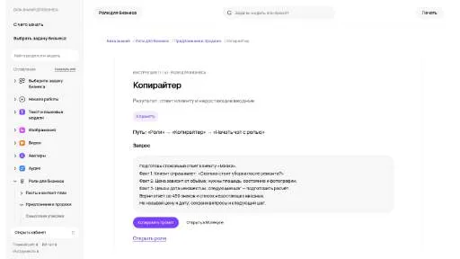
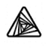

Adcrafter AIМаркетинг
«Adcrafter AI» готовит текстовый черновик по условиям задачи. «Adcrafter AI» готовит формулировки рекламного материала.
Раздел «Для копирайтеров»: варианты ИИ для этой задачи, описания возможностей и переходы к обзорам. Сравните несколько решений на одинаковом примере.
Передайте содержание услуги, ограничения и вопросы читателей. Молекула поможет подготовить ясный черновик; укажите места, где заказчик должен добавить подтверждение или собственный пример.
Напиши первый черновик страницы выездной настройки компьютеров по моему брифу. Сохрани состав работ и исключения. Не используй превосходные степени; вопросы к заказчику вынеси отдельно.

«Adcrafter AI» готовит текстовый черновик по условиям задачи. «Adcrafter AI» готовит формулировки рекламного материала.

«Affine ai» проверяет языковые ошибки в тексте.

ChatGPT помогает писать и редактировать тексты, разбирать документы и таблицы, обсуждать код. Поиск, анализ данных и работа с изображениями дополняют чат, когда доступны в выбранном аккаунте.
ProMind создаёт письменные материалы с участием ИИ для разных рабочих задач. Продукт предназначен для копирайтеров и маркетологов, а также менеджеров продукта и облачных консультантов. Эти аудитории используют подготовку контента при рассмотрении своих тем, связывая запрос и нужный формат текстового материала.
Shopia предлагает ИИ-инструменты написания и планирования контента для блога. Среди возможностей есть создание статей и рассмотрение конкурентных списков, а также средства SEO. API для пользовательских моделей дополняет текстовые задачи; в описании также представлена сеть специалистов для фриланс-работы.
«Virtlly» представлен в разделе «Маркетинг». При выборе проверьте нужную операцию и условия работы с результатом.
Wordybot помогает подготавливать развёрнутые тексты на русском языке, включая статьи и учебные работы. Сервис составляет план и предоставляет встроенный редактор для изменения фрагментов. Экспорт в Word дополняет создание книг, сценариев и бизнес-планов, связывая подготовку материала с дальнейшим редактированием документа.
«Aigital» представлен в разделе «Дизайн». При выборе проверьте нужную операцию и условия работы с результатом.
ChatINFO предоставляет разговорный интерфейс и средства генерации текстов прямо в браузере. Среди задач есть статьи и сочинения, рерайт и проверка написания. Помощь с кодом и творческими материалами дополняет набор инструментов российского сервиса для работы с письменным содержанием пользователя.
«Compose» готовит текстовый черновик по условиям задачи.
«DecEptioner» проверяет признаки происхождения или заимствования текста.
Jadve объединяет несколько текстовых моделей в русскоязычной ИИ-платформе. Доступны генерация текста, изображений и видео, библиотека запросов и помощники. Доступ предусмотрен через веб-интерфейс, Telegram, браузерные средства и Android, поэтому разные способы обращения сочетаются с несколькими направлениями подготовки контента в одном продукте.
LuciaAI помогает писать и перерабатывать материалы с помощью ИИ. Пользователь может перефразировать содержимое, увеличить его объём или подготовить более короткую версию. Набор также включает направления обучения и маркетинга, объединяя операции над текстом с разными задачами, для которых требуется подготовка письменного материала.
Reword помогает писать статьи и дорабатывать имеющийся текст с помощью ИИ. В набор входят контроль версий, обучение инструмента и поиск тематических пробелов. Его назначение связано с развитием материала: автор работает не только над формулировками, но и над тем, какие вопросы выбранной темы ещё недостаточно раскрыты.
«Toolsit AI» помогает готовить изменения программного кода.

WriterZen рассчитан на задачи, где нужно исследовать тему и разбирать найденную информацию. Ещё одно направление работы: готовить текст по теме и требованиям к содержанию.
Yes Ai Bot объединяет ИИ-модели для текста, изображений и видео в разговорном интерфейсе Telegram. Среди дополнительных операций есть замена лиц и локальное редактирование, а также увеличение изображения. API для разработчиков дополняет обращение к инструментам российского агрегатора в выбранном пользовательском сценарии.
«AI TXT» готовит текстовый черновик по условиям задачи.
«Aithor» перерабатывает формулировки написанного текста.
«BypassAI (bypassai.io)» перерабатывает формулировки написанного текста.
«Emma AI» готовит текстовый черновик по условиям задачи.
«humbot ai» готовит текстовый черновик по условиям задачи.
Narration Box преобразует письменный текст в речь с выбором голосовой подачи. Поддерживаются разные языки и акценты, предусмотрены настраиваемые элементы управления рассказчиком. Средства распространения и монетизации дополняют генерацию, связывая подготовку озвученного материала с его дальнейшим обменом и размещением в выбранном рабочем сценарии.
«Thundercontent» представлен в разделе «Тексты и контент». При выборе проверьте нужную операцию и условия работы с результатом.
Кампус AI помогает студентам и школьникам готовить учебные тексты и презентации. Сервис также разбирает задачи с объяснением шагов и поддерживает подготовку к экзаменам. Работа доступна через сайт или Telegram-бота; в исходном описании продукт обозначен также названием «Кэмп».
Adwrite пишет рекламные и маркетинговые материалы с помощью ИИ. В работе используются шаблоны и структуры копирайтинга, а содержимое предназначено для разных онлайн-площадок и поисковых задач. Инструмент ориентирован на подготовку текстового черновика под нужную подачу; факты и оригинальность формулировок нужно проверять перед размещением публикации.
Сравнивать «Altera AI» с другими инструментами раздела «Маркетинг» удобнее на одинаковом исходном материале.
«HitPaw AI Avatar» создаёт портретные и аватарные изображения. «HitPaw AI Avatar» готовит материал с говорящим персонажем.
Masha GPT объединяет доступ к нескольким текстовым нейросетям в русскоязычном чате. Описаны также направления генерации картинок, видео и музыкальных материалов с использованием разных моделей. Продукт представляет общий вход к таким задачам, где работа с текстом соседствует с подготовкой визуального и звукового контента.
«Sassbook AI Writer» готовит текстовый черновик по условиям задачи.
Toolsaday объединяет инструменты переформулирования и написания текстов с участием ИИ. Платформа помогает создавать истории и маркетинговые материалы, а также письма электронной почты. Пользователь выбирает нужный формат, связывая творческую задумку или деловую задачу с соответствующим средством подготовки письменного сообщения.
VLEX AI собирает текстовые, визуальные и голосовые модели в общем веб-интерфейсе. Пользователь обращается к разным нейросетям из одного аккаунта, выбирая инструмент для нужного материала. Сервис ориентирован на российскую аудиторию и поддерживает оплату картой российского банка.
«НейроТекстер» готовит текстовый черновик по условиям задачи.
«Ai Buster» связан с рабочими процессами WordPress.
«AI Writer - SpellCopy» готовит текстовый черновик по условиям задачи.
AraMind AI предоставляет набор средств написания текстов с участием ИИ. Инструменты предназначены для публикаций соцсетей и статей с поисковой тематикой. Пользователь может подготавливать эти материалы для своего сайта, связывая выбранный формат и тему с дальнейшей работой над письменным содержанием ресурса.
Ellie на ellieai.com помогает готовить письма и другой письменный контент с ориентиром на манеру пользователя. В описании также указаны редактор, анализ эмоционального тона и работа с данными. Для делового сообщения сравните исходные договорённости и черновик: персональный стиль не должен менять смысл обязательств или степень уверенности.
«One Click Human» перерабатывает формулировки написанного текста.
Сравнивать «PolitePost.net» с другими инструментами раздела «Email» удобнее на одинаковом исходном материале.
Сравнивать «Smartwriter» с другими инструментами раздела «Маркетинг» удобнее на одинаковом исходном материале.
«TextCortex» перерабатывает формулировки написанного текста.
W.A.I.T предлагает ИИ-инструменты для разных задач письма, от приветствий и писем до статей и резюме. Набор включает переписывание содержимого, хештеги и перевод. Продукт ориентирован на выбор нужного текстового формата, когда короткая реплика, публикация и переработка исходника требуют разных способов подготовки результата.
AiSearh объединяет текстовые, графические, звуковые и видеомодели в общем веб-интерфейсе. Среди задач предусмотрены написание текста и кода, изображения, озвучка и ролики. Встроенная ИИ-среда для сайтов и приложений дополняется расширением Chrome и Telegram-ботом, связывая разные виды генерации с несколькими способами доступа к платформе.
DinuAI предлагает помощника для подготовки письменных материалов: блоговых текстов, рекламы и электронной переписки. Пользователь задаёт тему и требования к содержанию. Для оценки одного черновика проверьте факты и тон, затем сравните результат с задачей канала; рекламная формулировка не должна добавлять неподтверждённые свойства продукта.
Сравнивать «Remail» с другими инструментами раздела «Email» удобнее на одинаковом исходном материале.
«AI-GPT (ai-gpt.ru)» помогает с задачами поискового продвижения. «AI-GPT (ai-gpt.ru)» готовит материалы для указанных письменных форматов.
«Article Forge» готовит текстовый черновик по условиям задачи. Дополнительно «Article Forge» помогает с задачами поискового продвижения.

Copy.ai связывает подготовку текста с процессами маркетинга и продаж. Пользу следует оценивать по конкретному рабочему материалу, который нужен команде.
Страница 2 из 3